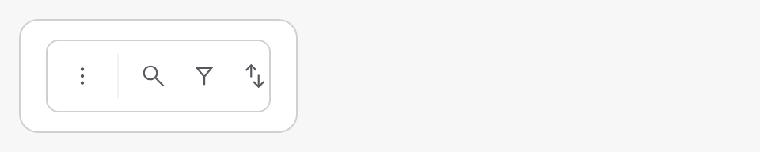
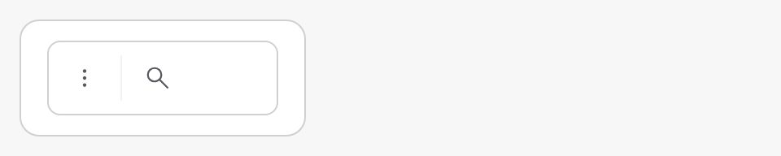
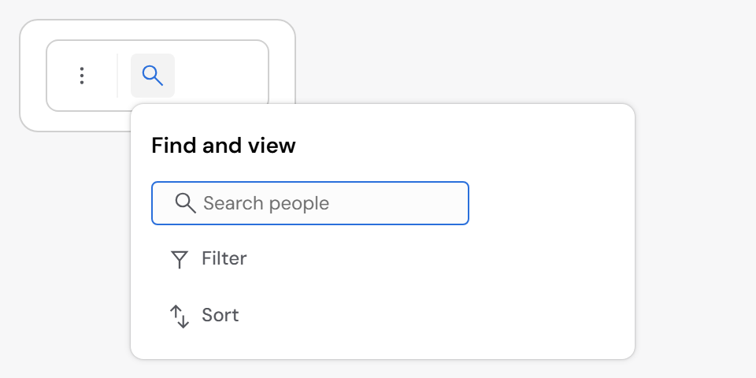
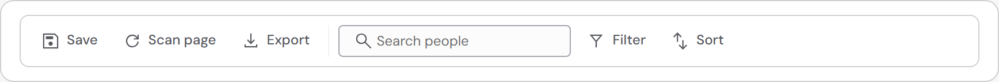

Command bar: the find side folds when it does not fit (#274)
In a narrow pane, the command bar folded its commands into More, but the find side (the search, Filter, Sort) stayed and ran past the bar. Your answer for narrow panels: fold into a drop-down or menu when it doesn't fit, measured.
- How: the find side is now the bar's last step. Once the commands, the end control and the quick filters have folded, the search, Filter and Sort fold into one Find and view button (the search icon).
- The button: it opens a popover with the same controls at full size: the search field open, Filter and Sort with their labels.
- With room: the bar is unchanged. Nothing in the bar is drawn outside it.
- Note: on 0.70.0 RedSave's own 360px panel already fits; the overflow shows in a 200px pane (pictured).
Built · 200px pane



Built · wide panel
